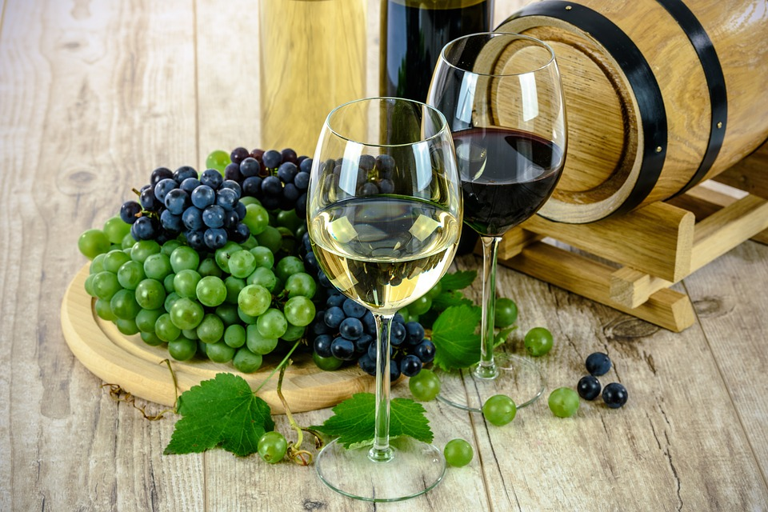

Що таке вино ?
Які бувають різновиди вина.
Вино - це алкогольний напій, який проводиться за допомогою натурального бродіння виноградного соку. Технічно вино може виготовлятися з іншої сировини (наприклад, з яблучного соку), але основні види вина виробляється з сортового винограду.
Вино універсальний напій і невід'ємний елемент нашої культури. Щоб правильно вибрати, потрібно знати основні відмінності різних сортів. Але винний світ величезний: існують тисячі різних видів, в яких дуже легко заплутатися. Стаття допоможе зрозуміти, які бувають бренди вина, навчить їх розрізняти, знаючи ключові відмінності, і скільки взагалі існує класифікацій. Вина прийнято розділяти за кольором, витримці, сировинну базу, солодощі і фортеці, технології виготовлення.
За кольором вина
Види вин і їх класифікація за кольором залежить від сорту виноградної лози, технології виготовлення.
Виділяють три основні категорії:
Червоне вино
Незважаючи на назву, червоне вино все ж роблять з чорних сортів винограду. Відтінок червоного вина може варіюватися від світлих тонів до темних залежно від сорту винограду. Допускається осад.
Біле вино
Виготовляється з сортів білого винограду, рідше з чорного винограду зі знятою шкіркою (в ній міститься основна кількість барвників).
Рожеве вино
Виготовляється з чорних сортів винограду з попередньо знятої шкіркою або суміші чорного і сорти білого винограду.
За типом сировини
Справжнє вино виходить, коли відбувається бродіння виноградного соку, але іноді в якості сировинного матеріалу використовують найрізноманітніші фрукти або ягоди.
Класифікація вин за категоріями сировини:
- Сортовий виноград, який вирощується спеціально для цього.
- Плодові фрукти (яблука, груші, сливи, персики, абрикоси і т. П.).
- Ягоди (вишня, полуниця, чорниця, кавун і т. П.).
- Ізюм (в'ялений або сушений виноград).
- Решта рослинна сировина (з використанням дині, соку дерев, квіткових пелюсток і т. п.).
Інший не менш важливий критерій - сорти винограду для вина, з яких проводиться напій. Класифікація вин за категоріями:
- Сортові - використовується один конкретний сорт плодів.
- Купажні - комбінація з декількох різних сортів.
Кріплене вино, до складу якого додатково додають настої різних гірких, пряних трав, фруктові соки або інші натуральні есенції, називають ароматизованим. Найбільш популярними ароматизованими винами є вермут і біттери.
Готове солодке вино, отримане методом упарювання виноградного сусла, називають лікерним. Наприклад, Аліканте і Фронтільян.
За вмістом цукру і спирту
Вміст спирту обов'язково маркується на етикетці в процентному відношенні.
Цукор і спирт у складі можуть бути як природними, так і додатково внесеними на стадії виробництва. Природна фортеця і солодкість напою залежать від зрілості виноградної ягоди і цукристості. Таким чином, чим сильніше ферментує виноградний цукор, тим міцніше стає вино, але в той же час зменшується вміст цукру у вині. Наприклад, відоме солодке біле вино Москато д'Асті (Moscato d'Asti) містить всього 5-6.5% спирту і 11-12% цукрів, в той час як фортеця кріпленого солодкого вина може становити до 20%.
У різних країнах, згідно з внутрішніми законами стандартизації, існує різна категорія видів вин за змістом цукру і спирту.
| Різновиди вин | Концентрація спирту(% обороту) | Концентрація цукрів(г/100см3) |
|---|---|---|
| I. Тихі вина | ||
| 1.Столові вина | ||
| сухі | 9 - 14 | до 0.3 |
| напівсухі | 9 - 12 | 1 - 2.5 |
| напівсолодкі | 9 - 12 | 3 - 8 |
| 2.Кріплені вина | ||
| міцні | 17 - 20 | 1 - 4 |
| десертні | 14 - 16 | 5 - 12 |
| напівсолодкі | 9 - 12 | 3 - 8 |
| солодкі | 15-17 | 14 - 20 |
| лікерні | 12-17 | 21 - 35 |
| 3.Ароматизовані вина | 16 - 18 | 6 - 16 |
| ІІ. Вина, насичені вуглекислотою | ||
| 1.Шампанське | ||
| брют | 10,5-12,5 | до 0.3 |
| саме сухе | 10,5-12,5 | 0.8 |
| сухе | 10,5-12,5 | 3.0 |
| напівсухе | 10,5-12,5 | 5.0 |
| солодке (тільки для резервуарного способу) | 10,5-12,5 | 8.0 |
| 2.Ігристі вина | ||
| червоні | 11 - 13.5 | 7 - 8 |
| рожеві | 10.5 - 12.5 | 6 - 7 |
| мускатні | 10.5 - 12.5 | 9 - 12 |
| 3.Шипучі або газовані вина | 9 - 12 | 3 - 8 |
| * У таблиці наведено міжнародні стандарти і вимоги. | ||
За змістом винної кислоти і вуглекислого газу
Показник кислотності є одним з основних показників вина. Загальна кислотність завжди перераховується на винну кислоту, як основна.
Винна кислота відповідає за терпкість, насиченість смаку. У міру дозрівання ягоди зміст кислоти в ній зменшується, а цукрів - збільшується. Чим більше сонця, вище температура повітря, тим нижче природний вміст винної кислоти. Тому у виробництві вина нерідко необхідно штучне балансування рівня pH для отримання ідеального смаку. Винна кислота врівноважує баланс між фортецею і солодкістю напою, насичує його смакові і ароматичні якості. Крім того, винна кислота має консервуючі властивості, виступаючи в якості природного консерванту.
Класифікація вин за категоріями кислотності:
- Високий рівень (pH 2.5-3.1);
- Середній рівень (pH 3.1-3.8);
- Низький рівень (pH 3.8-4.5).
Найчастіше найбільший вміст винної кислоти спостерігається в білих винах, адже білі сорти зазвичай вирощують в більш холодних регіонах, але існують червоні вина з високим показником кислотності - наприклад, Піно Нуар або К'янті.
Окрему групу становлять вина, в складі яких присутній вуглекислий газ. Діляться за способом приготування:
- Ігристі вина - шипучі вина, насичені природним вуглекислим газом, який виділяється під час бродіння цукрів. Процес може бути первинним - природним або вторинним - здійснюється з додаванням дріжджів.
- Іскристі вина - штучно газовані вина на стадії приготування.
Такі напої в Росії прийнято називати «шампанським». Це не зовсім коректно, адже Шампанське - французьке ігристе вино, вироблене в провінції Шампань, а не спосіб приготування.
За якістю і терміном витримки
Оцінка якості вина безпосередньо залежить від використовуваного сорту ягід, процентного співвідношення основних інгредієнтів і тривалості витримки - визріванню напою. Додавання води і барвників неприпустимо. Вина прийнято ділити на ординарні, марочні, колекційні сорти.
Ординарне - вино без відмінних рис виробництва. Ординарні вина витримують від трьох місяців до одного року, після чого їх вже починають продавати. Існують місцеві ординарні вина, в назві яких додатково вказується місце їх виготовлення.
Марочне - вино, яке визрівало не менш 1.5 років, а для кріплених і десертних сортів - не менш 2 років. Марочне вино виробляють з точним дотриманням технології з конкретних сортів ягід, на пляшці обов'язково вказується рік врожаю. Серед марочних сортів окремо класифікують вина, виготовлення яких відбувається тільки в конкретному географічному регіоні під контролем країни-виробника.
Колекційне - марочне високоякісне вино, яке після закінчення визрівання в дубовій бочці витримувалося не менш 3 років. Кінцева витримка проходить, коли вино розлито по пляшках.
Червоні вина
Насичений криваво-червоний колір напою йому надає особливий пігмент, що міститься в шкірці чорних сортів ягід. В процесі мацерації (коли настоюється виноградне сусло) пігмент забарвлює, насичуючи вино терпкістю. Червоні столові вина відмінно доповнюють м'ясні страви.
Відомі види червоного вина:
Мерло. Четвертий за популярністю сорт винограду. Мерло відрізняється м'яким легким букетом з найтоншим трав'яним присмаком - ідеально підійде для новачка, який ще не розуміє принади сухого вина. Універсальне вино, яке можна поєднати з чим завгодно.
Каберне совіньон. Один з найзнаменитіших сортів. Нерідко поєднується з іншими сортами. Володіє міцним трохи терпким смаком з освіжаючими ванільними нотами. Найкраще підходить до страв з червоного м'яса - особливо до яловичини.
Сіра або шираз. Це дві назви одного й того ж сорту винограду. Сіра надає вину глибокий пряний червоний відтінок, має помірну терпкістю з легкою нотою чорної смородини. Ідеально підійде до смаженого м'яса (стейкам), рагу.
Піно нуар. Вирізняється шляхетним і дуже м'яким свіжим смаком, з мінімальною терпкістю. У букеті переважають фруктові ноти. Добре підійде до суші, страв з лосося, курки, баранини.
Мальбек. Відомий сорт червоного вина яке буває розкривається абсолютно різним присмаком, в залежності від регіону де був зібраний урожай. Як правило, це легкий напій насиченого темного кольору, часто змішується з іншими сортами для виготовлення столових вин Бордо. Відмінно підійде до м'яса, фуа-гра.
Кагор. Існує два типи Кагор: сухе червоне вино французького походження з регіону Каор, виготовлене із сорту Мальбек і традиційне в Росії кріплене десертне вино з Каберне-совіньон і інших високоцукристі сортів (Сапераві, Морастель). Мінімальна витримка справжнього Кагору - 3 роки. Кагор має насичений темно-червоним кольором і вираженим яскравим солодким смаком. У поданні універсальний: підійде до м'ясних стравами, десертів.
Білі вина
У Франції, де величезна кількість виноградників, кажуть, що нічого не втамовує спрагу краще, ніж келих сухого сорти білого вина. Біле вино асоціюється з чимось легким, вишуканим. Біле вино добре поєднується з морепродуктами, сиром, м'ясом птиці. Використовується в готуванні деяких м'ясних страв.
Відомі види білих вин:
Шардоне. Дуже популярний сорт білого винограду. За своїм смаком набагато м'якше інших видів сухого сорти білого вина. Добре освіжає і тонізує, букет відрізняється легкими цитрусовими і солодкуватими тонами. У поданні універсальний.
Совіньон блан. Відрізняється свіжим легким смаком. Домінуючий запах залежить від регіону, де був зібраний урожай, може варіюватися кислих фруктових відтінків до солодких тропічних. Добре підходить до страв з морепродуктів, птиці, салатів.
Білий мускат або Москато. Той, хто пробував його хоч раз, без проблем знову дізнається цей сорт винограду. Мускатні сорти мають вишуканим солодким смаком з характерними фруктовими нотами і легким мускусним ароматом. Найкраще Мускатне вино розкриває свій смак без їжі, може бути поданий разом з десертами.
Токай. Популярне угорське сухе біле вино. Виготовляється з сортів Мускат білий і Гарс-Ловель. Букет дуже складний, тонкий, з мускатним ароматом і ледь помітним ароматом скоринки свіжого хліба. Подавайте його з десертом.
Рожеві вина
За оманливим світлим відтінком рожевих вин ховається складний і сильний аромат. У виробництві багатьох сортів рожевого вина використовується не суміш різних сортів винограду, як прийнято вважати, а м'якоть чорного винограду, мінімально контактує з шкіркою. В результаті колір зафарбовується лише на кілька тонів. Відомі види рожевого вина і їхня відмінність:
Гренаш троянді. Ідеальний вибір для жаркого літнього вечора. Освіжаюче, домашнє, з помірним терпким смаком і нотами стиглої полуниці, апельсина і гібіскуса.
Каберне совіньон троянді. Володіє пряним терпким смаком з переважаючими вишневими і ягідними нотами.
Мускат рожевий. Солодке десертне вино з насиченим пряним смаком, мускатним ароматом і легкими нотах рожевих пелюсток.
Рожеве вино чудово поєднується з десертами, фруктами, сиром, легкими м'ясними та рибними стравами.